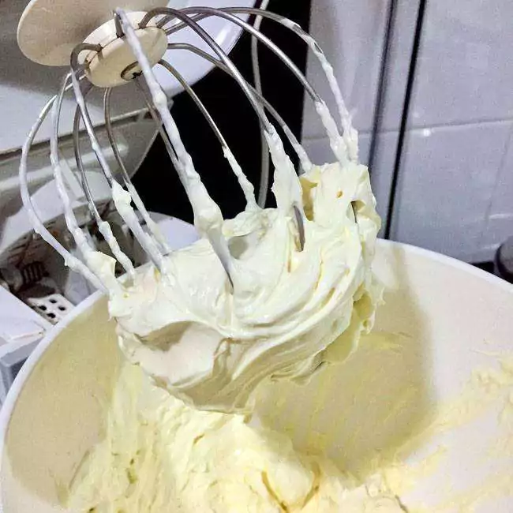
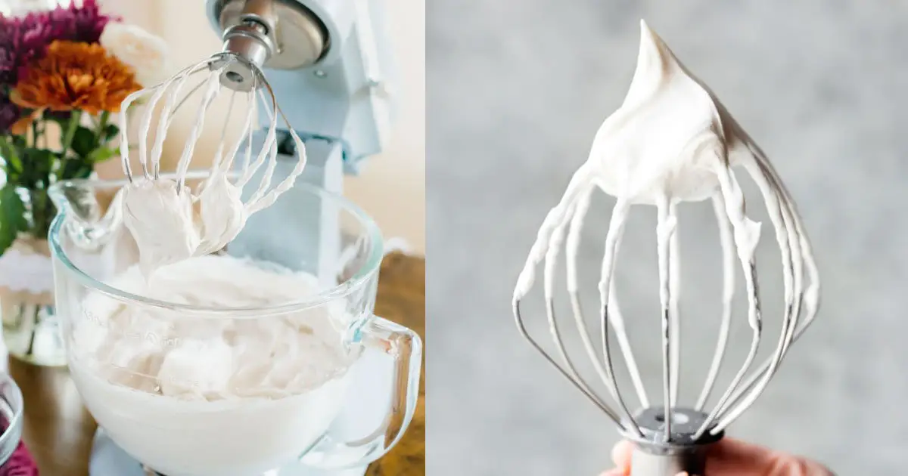

Esta receita serve para 20 porçoes, a dificildade de preparo es medio e para realizar esta receita vamos precisar de 120 min dividido em:
- Preparação 10 min
- Cozimento 50 min
- Servir 60 min
Conteudo
Ingredientes
Massa
- 200 gr de manteiga sem sal
- 340 açucar branca
- 4 ovos inteiros
- 1 colher de sopa de baunilha
- 340 de farinha de trigo
- 20 gr cacau 100%
- 10 gr fermento quimico
- 5 gr bicarbonato
- 130 ml de leite
- 15 ml vinagre
- 150ml iogurt natural
- 4 gr corante vermelho
Recheio
- 300 gr chocolate branco
- 200 gr creme cheese
- 150 gr chantilly
- 100 gr amêndoas laminadas torradas (opcional)
- 100 gr geleia de frutas vermelhas
Cobertura
- Chantilly
- Frutas vermelhas (morango, mistilo, amora.)
- Farofa do bolo vermelho
Modo de preparo
Massa
- Em um recipiente, misture o vinagre com o leite, reserve ate talhar.
- Em outro recipiente, misture o iogurte natural com o corante, reservar.
- Em uma batedeira, bata a manteiga com açucar ate obter uma mistura esbranquiçida
- Com a batedeira ligada, adicione os ovos, a um. Acrescente a baunilha e bata.
- Em um recipiente, peinere a farinha de trigo, o cacau, o fermente e o bicarbonato.
- Com a batederia ligada em velocidade baixa va intercalando a adiçao de leite talhado e o iorgute com corante.
- Uma vez todo misturado, desligamos a batedeira e adicionamos os ingredientes secos, misturar em forma envolventes ate ficar homogeneo.
- Despeje a mistura na forma de 20 cm de diâmetro forrada com papel manteiga no fundo e laterais
- Levar ao forno preaquecido em 180º por cerca de 50 minutos.

Recheio
- Em uma batedeira colocar o chantilly e bater até chegar ao ponto, reservar
- Cortar em pedazos pequenos o chocolate branco, derreter no microondas de 30 a 30 seg.
- Em um recipiente colocar o chocolate derretido e o chantilly, misturar bem.
- Nesse mesmo recipiente adicionar o creme cheese e as amendoas, misturar tudo ate ficar homogeneo.
- Se ficar muito liquido pode deixar na geladeira pelo menos 10-15 min para endurecer. 
Cobertura
- Em uma batederia colocar 100 ml de chantilly e bater até chegar ao ponto de espatular.
- Adicionar essencia de baunilha ao gosto, misturar e reservar. 
Montagem
- Com a massa ja fria, corte-a no sentido horizontal em 3 partes.
- Utilize a propria forma que assou o bolo para fazer a montagem, forrar com papel manteiga ou papel filme. Coloque uma das partes da massa e humedeça com calda doce (agua e açucar), logo enseguida colocar uma camada de recheio pela borda e no meio colocar a geleia de frutas vermelha, cobrir com mais recheio.
- Coloque a outra massa, aperte um pouco e com delicadeza, humedeça novamente e coloque mais um pouco do recheio e geleia.
- Finalizando com a uma parte deve apertar delicadamente humedeçer e cobrir-a com papel filme.
- Levar ao freezer por cerca de 1 hora.
- Desenforme o bolo e cubra com a cobertura de chantilly, finalizar com as frutas e a farofa do mesmo bolo